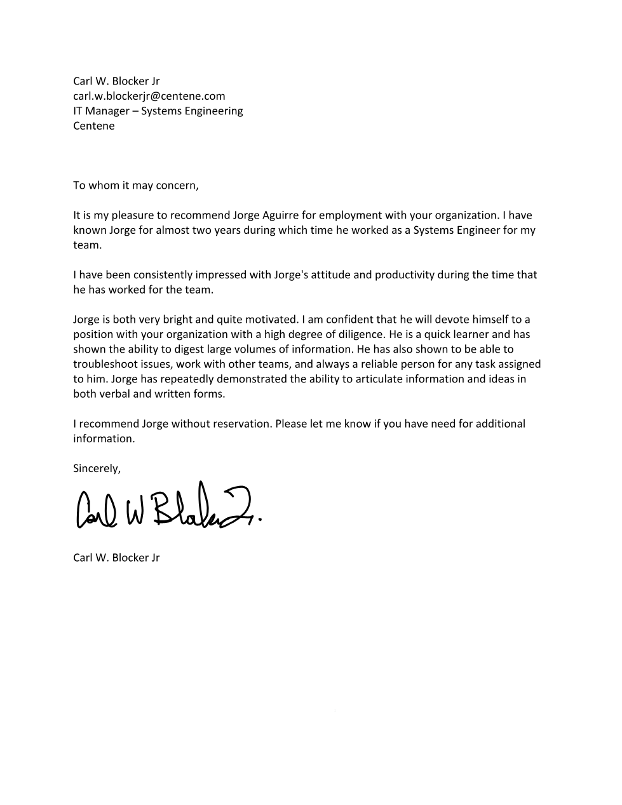

Senior Cloud Infrastructure Architect with 5+ years designing enterprise multi-cloud platforms (Azure, AWS), built on 15 years of international IT delivery across the EU and US. Currently co-owning the mAzure HUB platform at Mercedes-Benz — a multi-region hub-and-spoke Azure environment providing on-prem connectivity, shared services and AI / GPU workload enablement. Specialised in Terraform / Terragrunt, multi-tenant Kubernetes (AKS / EKS, vCluster patterns), GPU platform engineering (NVIDIA NGC / CUDA, GPU Operator) and agentic AI architecture (LangChain, LlamaIndex, RAG). Delivered a 30% reduction in AWS infrastructure cost through IaC adoption and module reuse.
Lead digital-transformation within a multi-cloud strategy — security, automation and operational efficiency.
Fortune 500 US healthcare — led cloud adoption and CI/CD for mission-critical workloads (HIPAA).
IT & AV infrastructure for a regulated EU pharma agency during the post-Brexit relocation.
Advanced L2/L3 support & administration for 500+ corporate users at APAC HQ.
Enterprise videoconferencing & advanced communication technology for a high-profile delivery.
Foundational IT support: administration of infrastructure for 500+ banking users.
AI agents for autonomous request creation & incident triage — reason over CMDB, apply routing rules, escalate to humans below a confidence threshold.
Multi-agent RAG for clinical data extraction with GxP verifiability: planner / retriever / extractor / verifier; every decision logged with prompt + model version + citations.
Agent workloads on NVIDIA NGC/CUDA via mAzure HUB — private endpoints, identity-bound access, per-tenant isolation. One paved road for open-weights & hosted endpoints.
Autonomous signal detection aligned with ICH E6 — protocol deviations, adverse-event signals & data-integrity alerts feeding the GxP audit trail.
Higher Education — Network Security (CISCO) · 2005–2007
Higher Education — IT & Telecommunications · 2005–2008
AI / GenAI Architecture — LangChain, LlamaIndex, RAG, agentic systems.
AZ-305 — Azure Solutions Architect Expert · in progress.
Available for senior architecture engagements — Cloud platforms, GPU/AI infrastructure & Agentic AI for regulated industries.
